Product Requirements Document • V1.0
PRD hệ thống Smart Audio Guide cho phố ẩm thực Vĩnh Khánh
Tài liệu này mô tả sản phẩm ở mức nghiệp vụ và kỹ thuật cho hệ thống gồm Web Admin ASP.NET Core MVC, Mobile App .NET MAUI và SQL Server Database. Nội dung bám theo mã nguồn hiện tại, tập trung vào cấu trúc hệ thống, cơ sở dữ liệu, API và các luồng xử lý chính.
ASP.NET Core 8 MVC
.NET MAUI
SQL Server
Geofence + TTS 5 ngôn ngữ
Single-page PRD
01 • Product overview
Business + Technical PRD
Tổng quan sản phẩm
Smart Audio Guide Vĩnh Khánh là hệ thống hỗ trợ khách tham quan tiếp cận phố ẩm thực Vĩnh Khánh bằng trải nghiệm bản đồ, định vị và thuyết minh tự động theo ngôn ngữ đã chọn. Trục chính của giải pháp là POI (Point of Interest) — mỗi quán ăn được mô tả bằng dữ liệu vị trí, bán kính kích hoạt, mức ưu tiên và nội dung đa ngôn ngữ.
Bài toán cần giải quyết
- Giới thiệu các quán ăn theo ngữ cảnh vị trí thay vì yêu cầu người dùng tự tìm từng quán.
- Cho phép quản trị viên cập nhật nội dung, hình ảnh và tọa độ tập trung qua web.
- Hỗ trợ trải nghiệm đa ngôn ngữ với cơ chế fallback để app luôn có nội dung đọc.
- Tạo nền tảng dashboard theo dõi lượt nghe, thiết bị online và mức độ quan tâm theo loại quán.
Giá trị cốt lõi của MVP
- Tập trung vào một tuyến phố cụ thể nên dữ liệu POI nhỏ, dễ kiểm soát và dễ demo end-to-end.
- Phân tách rõ trách nhiệm: web ghi dữ liệu, app đọc và tiêu thụ dữ liệu, DB giữ thống kê tập trung.
- Giảm chi phí triển khai nhờ tận dụng .NET MAUI, MAUI Maps, TTS hệ điều hành và kiến trúc backend tương đối gọn cho phạm vi đồ án.
- Thuận lợi cho đồ án vì vừa có nghiệp vụ quản trị, vừa có mobile map/GPS/TTS và vừa có database design.
Ma trận hiện trạng theo source code
| Năng lực | Web / Backend | App MAUI | Đánh giá trạng thái |
|---|---|---|---|
| CRUD POI + quản trị dữ liệu | Đã có đầy đủ màn hình, controller, upload ảnh, parse Google Maps và soft delete. | Đọc dữ liệu POI từ API và render lên map. | End-to-end đã có |
| Geofence + auto narration | Backend chỉ đóng vai trò cấp dữ liệu POI và lưu log nếu cần. | Đã có GPS poll, Haversine, debounce, cooldown, queue TTS và mock GPS. | Logic cốt lõi đã có trên app |
| Đăng nhập / đăng ký mobile bằng JWT | Đã có /api/auth/login và /api/auth/register. |
UI hiện vẫn đi theo Preferences cục bộ và guest mode. |
Backend sẵn sàng, app còn partial |
| Heartbeat thiết bị online | Đã có /api/ping, bảng ActiveDevices và dashboard online. |
Đã có helper phía app; cần nối vào flow chạy mặc định nếu muốn dùng end-to-end. | Khả dụng, cần hoàn thiện tích hợp |
| Ghi log narration vào analytics | Đã có /api/narration/log và dashboard sử dụng bảng NarrationLog. |
Luồng demo hiện tập trung vào phát TTS; việc log sau khi phát cần gắn thêm ở runtime nếu muốn số liệu live. | Backend sẵn, app chưa phải luồng chính |
Luồng thật hoàn chỉnh nhất ở phiên bản hiện tại: Admin CRUD POI trên web → app gọi
/api/pois → map render lại → geofence và TTS hoạt động trên app.
Các luồng auth JWT, ping thiết bị và narration logging đã có nền backend rõ ràng, nhưng mức độ gắn vào runtime app hiện thấp hơn nên cần ghi rõ trong PRD để tránh hiểu nhầm là đã hoàn tất 100%.
02 • Goals & scope
Scope locked to current source
Mục tiêu, đối tượng sử dụng và phạm vi
Phần này mô tả mục tiêu sản phẩm theo hướng Business Analyst, nhưng vẫn bám đúng hiện trạng source code của hệ thống.
Mục tiêu nghiệp vụ
- Cung cấp trải nghiệm tham quan ẩm thực có hướng dẫn âm thanh.
- Tăng khả năng khám phá quán theo khoảng cách thực tế trên bản đồ.
- Cho phép cập nhật nội dung tập trung từ web admin thay vì chỉnh sửa trực tiếp trong app.
- Tạo dữ liệu thống kê để kiểm tra màn dashboard và biểu đồ.
Nhóm người dùng
- Admin: quản trị nội dung, người dùng, dashboard, kiểm tra trạng thái hệ thống.
- Người dùng app: khách tham quan sử dụng GPS, bản đồ, tìm kiếm và nghe thuyết minh.
- Guest mode: người dùng vào nhanh không cần tài khoản đầy đủ trên app.
Out of scope cho phiên bản hiện tại
- Không có CMS nâng cao ngoài CRUD POI và user.
- Không có cơ chế thanh toán, đặt chỗ, social feed hoặc review cộng đồng.
- Không có bản đồ offline đóng gói kiểu PMTiles như một số hệ khác.
- Mobile auth chưa đồng bộ hoàn chỉnh với backend JWT ở luồng đăng ký/đăng nhập hiện tại.
Ghi chú quan trọng về độ khớp source: backend đã có API
/api/auth/login và /api/auth/register,
nhưng luồng đăng ký/đăng nhập hiện tại của app MAUI vẫn đang dùng Preferences cục bộ và chế độ guest.
Vì vậy PRD này mô tả rõ đây là khoảng trống tích hợp của phiên bản hiện tại, không xem đó là tính năng đã hoàn tất end-to-end.
03 • Architecture
3-layer architecture
Kiến trúc tổng thể hệ thống
Kiến trúc tổng quan gồm 3 khối: Mobile App, Web Admin/API và SQL Server. Web đóng vai trò trung gian giữa trải nghiệm quản trị và app người dùng, đồng thời giữ nhiệm vụ xác thực, trả dữ liệu POI, nhận heartbeat và ghi log narration.
App .NET MAUI
- Hiển thị map, pins, nearby strip và filter/search.
- Theo dõi GPS, tính khoảng cách Haversine và kích hoạt geofence.
- Đọc mô tả qua TTS hệ điều hành, có queue và fallback ngôn ngữ.
- Hỗ trợ GPS giả lập, onboarding, guest mode và refresh dữ liệu.
Web Admin / API
- CRUD POI, user management, parse Google Maps link, upload ảnh.
- Dashboard thống kê theo ngày, theo loại quán, theo ngôn ngữ.
- Cookie auth cho web và JWT cho mobile API chạy song song.
- Phơi bày REST endpoints cho POI, login/register, ping và narration log.
SQL Server Database
- 4 bảng lõi:
Users,PointsOfInterest,ActiveDevices,NarrationLog. - 5 views dashboard để gom dữ liệu thống kê.
- 7 stored procedures cho CRUD POI, user và upsert heartbeat.
- 1 trigger tự động cập nhật
UpdatedAtkhi sửa POI.
Sơ đồ kiến trúc tổng thể
04 • Web Admin
net8.0 • MVC + EF Core
Khối Web Admin ASP.NET Core MVC
Đây là bề mặt quản trị chính của hệ thống. Web xử lý CRUD POI, quản lý user, dashboard thống kê và cung cấp REST API cho mobile. Điểm cần phân biệt là: phần API auth/ping/narration log đã có ở backend, nhưng mức độ app MAUI sử dụng từng endpoint hiện chưa đồng đều.
Implemented
Dashboard / Home
- Thống kê tổng POI, POI active, user active, online devices, plays hôm nay và 30 ngày.
- Top 10 POI theo lượt nghe và số thiết bị duy nhất.
- Phân bố category và language bằng các truy vấn group-by.
- View dùng Chart.js cho line, doughnut và bar chart; có AJAX endpoint
/Home/OnlineCountđể làm mới số thiết bị online mỗi 30 giây.
Implemented
POI Management
- Danh sách có search theo tên, filter category, tab xem đã xóa, phân trang 15 bản ghi mỗi trang.
- Form tạo/sửa hỗ trợ 5 ngôn ngữ mô tả, tọa độ, bán kính geofence, priority, ảnh và metadata.
- Soft delete và restore bằng
IsActivethay vì xóa cứng. - Update
UpdatedAtrõ ràng ở controller và được DB trigger gia cố thêm.
Implemented
Google Maps Parsing
- AJAX endpoint
/Pois/ParseGmapsnhận chuỗi và trả về{ ok, lat, lng, method }. - Parser hỗ trợ 6 định dạng: tọa độ thô,
@lat,lng,?query, iframe!3d !2d,?ll, URL path. - Validate giới hạn lat/lng để chặn tọa độ không hợp lệ.
Implemented
Image Pipeline
- Validate MIME
jpg/png/webpvà kích thước tối đa 3 MB. - Resize về cạnh tối đa 800 px bằng ImageSharp.
- Lưu file vào
/wwwroot/uploads/pois/{guid}.jpg. - Trả về URL tuyệt đối để app mobile gọi trực tiếp.
Implemented
User Management
- Chỉ role
adminmới vào được/Users. - CRUD user, đổi role admin/user, hash mật khẩu bằng BCrypt work factor 11.
- Cho phép sửa mà để trống password để giữ nguyên hash cũ.
- Chặn vô hiệu hóa tài khoản
admingốc.
Implemented on backend
Authentication Layer
- Cookie authentication cho MVC pages, thời hạn 12 giờ, sliding expiration.
- JWT Bearer cho mobile API, HMAC-SHA256, mặc định 30 ngày.
- Anti-forgery cho POST form phía web.
- CORS hiện mở cho mọi origin ở môi trường demo app mobile.
Implemented
Seed & bootstrap
DataSeedertự tạo hai tài khoản mặc định:admin/admin123vàdemo/demo123.- Schema SQL script tạo 4 bảng, 7 indexes, 1 trigger; script seed nạp 20 POI, 200 narration logs và 3 active devices mẫu.
- Cách khởi động phù hợp với đồ án: chạy SQL scripts trước, rồi mới chạy web để seeding user bằng C#.
Kết luận cho khối Web Admin: phần web không chỉ là panel CRUD mà còn là API gateway tối thiểu cho app MAUI.
Đây là khối đã hoàn thiện tương đối đồng đều nhất của hệ thống hiện tại: từ schema SQL, seeding, dashboard, form xử lý dữ liệu đến auth đa scheme.
Controllers & services chính
AuthController
HomeController
PoisController
UsersController
ApiAuthController
ApiPoisController
ApiPingController
ApiNarrationController
JwtService
ImageService
GmapsParser
DataSeeder
Quy tắc dữ liệu quan trọng
Categorychỉ nhận:Oc,Nuong,Lau,CaPhe,Khac.DescriptionVivàDescriptionEnlà bắt buộc.RadiusMetersgiới hạn 1–500;Prioritygiới hạn 1–10.- Login web chỉ cho role
admintruy cập dashboard và các trang quản trị.
Sequence tạo POI từ Web Admin
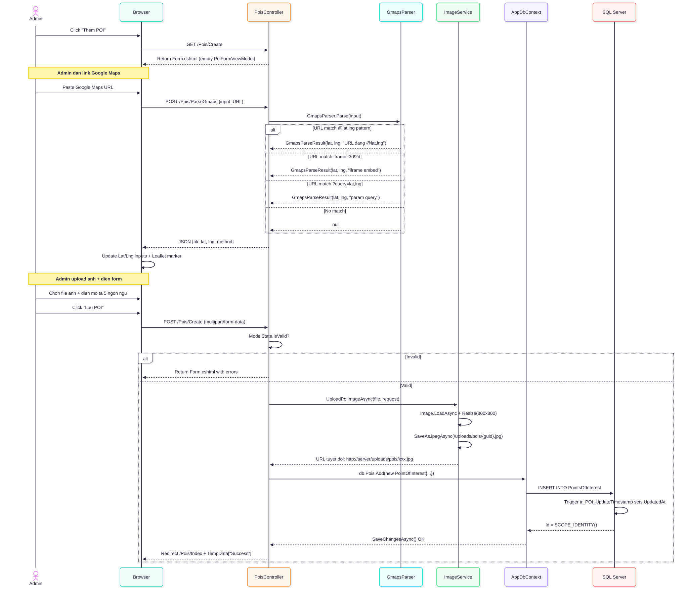
Flow quản lý POI
Sơ đồ xác thực Web và API
05 • Mobile App
MAUI Map + Geofence + TTS
Khối Mobile App .NET MAUI
App là bề mặt tương tác cho khách tham quan: hiển thị bản đồ, lọc và tìm kiếm quán, theo dõi GPS, tự động phát thuyết minh, mô phỏng GPS khi demo và tải lại dữ liệu POI từ web.
Implemented
Map & discovery
- Map hiển thị pins theo category, zoom về khu vực Vĩnh Khánh khi vào màn hình chính.
- Search theo tên quán, filter chips theo category và nearby strip theo khoảng cách thực tế.
- Cho phép pin một quán ở xa lên đầu strip nếu người dùng chủ động chọn quán đó.
Implemented
Location tracking
- Xin quyền
LocationWhenInUsekhi bắt đầu. - Vòng lặp vị trí mỗi 2 giây với yêu cầu chính xác tốt, timeout 5 giây.
- Geofence chỉ được kích hoạt khi độ chính xác GPS ≤ 50m.
- Trạng thái GPS được phát qua event để cập nhật UI.
Implemented
Geofence engine
- Tính Haversine user ↔ tất cả POI.
- Debounce 3 giây trước khi coi là đã thực sự vào vùng.
- Cooldown 5 phút để tránh phát lại cùng một quán liên tục.
- Nếu nhiều POI cùng đủ điều kiện, ưu tiên POI gần nhất.
Implemented
Narration service
- Dùng queue nội bộ để tránh overlap âm thanh.
- Dùng
TextToSpeech.Default.GetLocalesAsync()để tìm locale phù hợp. - Nếu không thấy locale của ngôn ngữ yêu cầu thì fallback sang English.
- Cho phép dừng toàn bộ hàng đợi khi user đổi ngôn ngữ hoặc chạm vào vùng khác.
Implemented
Offline fallback
PoiRepository.LoadAllAsync()ưu tiên API; nếu lỗi thì dùng seed data cục bộ.- Seed data chứa danh sách quán demo quanh tuyến Vĩnh Khánh.
- Nếu API không truy cập được thì app vẫn giữ luồng demo bằng seed data; phần hiển thị hình ảnh không phải điều kiện bắt buộc để geofence/TTS hoạt động.
Partial integration
Auth & onboarding
- App quyết định trang khởi đầu bằng
Preferences:onboarding_donevàlogged_in. - Onboarding hiện có 4 slide giới thiệu phố Vĩnh Khánh, GPS, TTS 5 ngôn ngữ và cơ chế chống nhiễu.
- Có guest mode, tài khoản
admin/1234trên app và local register/login bằngPreferences. - Backend JWT đã sẵn sàng, nhưng mobile login/register chưa nối hoàn toàn với API ở luồng hiện tại.
Điểm cần nói thật khi bảo vệ đồ án: app MAUI hiện làm rất tốt phần bản đồ, geofence, mock GPS, refresh POI và TTS đa ngôn ngữ;
tuy nhiên luồng xác thực mobile bằng backend JWT vẫn chưa thay thế hoàn toàn login/register local. Việc mô tả rõ ranh giới này sẽ làm PRD đáng tin hơn.
Service architecture trên app
LocationTrackingService
MockGpsService
GeofenceService
NarrationService
PoiRepository
ApiService
EventBus
MapPage
Business rules trên app
- Fallback mô tả theo thứ tự: ngôn ngữ đang chọn → English → Vietnamese.
- Nearby popup hiển thị bán kính 500m; nearby strip ưu tiên nhóm trong 50m.
- Mock GPS hiện dùng chủ yếu cho teleport bằng cách chạm map; service cũng có logic auto-walk để mô phỏng di chuyển theo tuyến khi cần mở rộng demo.
- Help popup thay đổi nội dung theo ngôn ngữ hiện tại.
Auto TTS khi đến gần quán
Tap pin / card thủ công
Search / Filter
GPS giả lập
Xử lý lỗi GPS / Network / TTS
Onboarding / Login / Register
Refresh data từ Web Admin
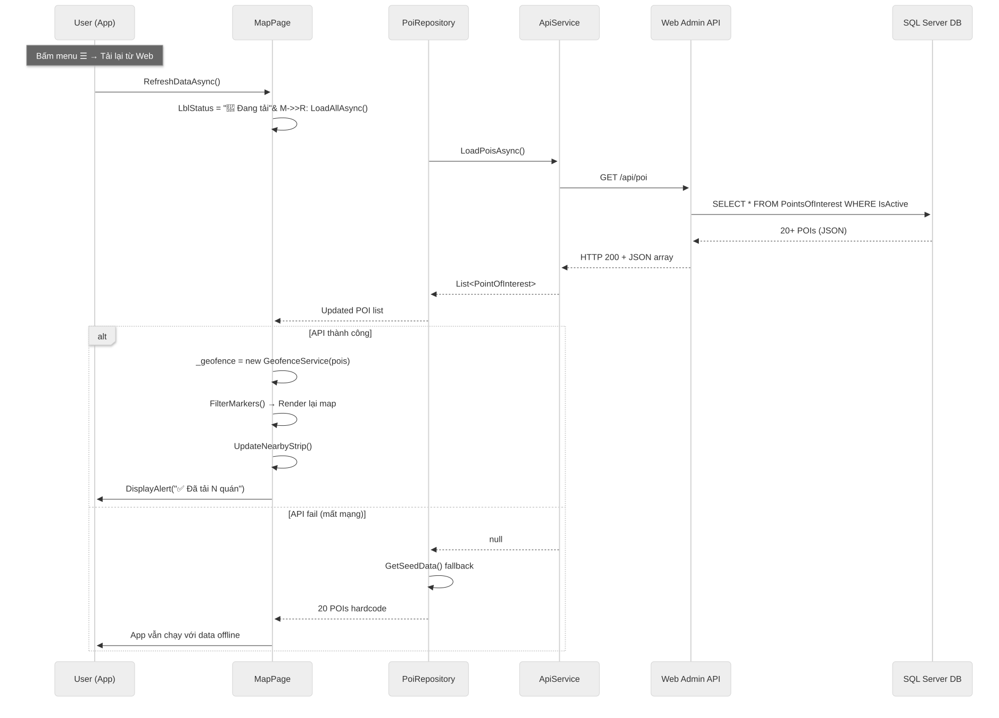
Service Architecture của app
06 • Data layer
SQL Server schema
Database design và mô hình dữ liệu
Database VinhKhanhGuide là trung tâm dữ liệu của toàn bộ hệ thống. Thiết kế chọn hướng phẳng, rõ và dễ demo: dữ liệu mô tả đa ngôn ngữ nằm trực tiếp trên bảng POI, còn analytics và online presence được tách thành 2 bảng chuyên biệt.
Bảng dữ liệu lõi
| Bảng | Mục đích | Điểm cần chú ý |
|---|---|---|
Users |
Lưu tài khoản admin và user. | Username unique, role chỉ có admin hoặc user, hash mật khẩu BCrypt. |
PointsOfInterest |
Lưu quán ăn, vị trí, bán kính, mô tả 5 ngôn ngữ, ảnh và metadata. | DescriptionVi và DescriptionEn bắt buộc; dùng IsActive để soft delete. |
ActiveDevices |
Lưu heartbeat của thiết bị mobile. | Khóa chính là DeviceId; dùng LastPingUtc để tính online realtime. |
NarrationLog |
Ghi log mỗi lần app phát narration. | Language bị ràng buộc 5 giá trị cố định; FK sang POI không cascade delete. |
Views, procedures và trigger
| Thành phần | Số lượng | Nội dung |
|---|---|---|
| Views | 5 | vw_OnlineUsers, vw_TopPlayedPois, vw_LanguageStats, vw_DailyPlays, vw_UserStats. |
| Stored procedures | 7 | sp_InsertPoi, sp_UpdatePoi, sp_SoftDeletePoi, sp_RestorePoi, sp_RegisterUser, sp_LoginUser, sp_UpsertPing. |
| Trigger | 1 | tr_POI_UpdateTimestamp tự gán UpdatedAt nếu câu lệnh update chưa set trường này. |
| Indexes | 7 | Tối ưu cho user active/role, POI active/category/priority, active devices và narration logs. |
Lý do không tách bảng ngôn ngữ: với phạm vi hiện tại, việc để
DescriptionVi/En/Ja/Ko/Zh nằm cùng một hàng POI giúp query đơn giản, dễ viết logic fallback trên app và giảm số lượng JOIN. Đổi lại, cách này sẽ kém linh hoạt hơn nếu sau này mở rộng thêm nhiều ngôn ngữ.
ERD hệ thống
07 • API surface
REST JSON
Hợp đồng API cho mobile app
Backend hiện phơi bày các endpoint cốt lõi cho mobile app: xác thực, tải POI, heartbeat và ghi nhận lượt phát narration. Bảng dưới đây ghi thêm trạng thái sử dụng thực tế để phân biệt rõ backend capability và mức độ app đang gọi.
Danh sách endpoint chính
| Method | Endpoint | Mục đích | Ghi chú | Trạng thái trong phiên bản hiện tại |
|---|---|---|---|---|
| POST | /api/auth/login |
Đăng nhập API, trả JWT + user info. | Có thể auto upsert device nếu request kèm deviceId. |
Backend sẵn App chưa dùng làm flow chính |
| POST | /api/auth/register |
Tạo user mới và trả JWT. | Role mặc định là user; password tối thiểu 6 ký tự phía backend. |
Backend sẵn App còn đăng ký local |
| GET | /api/pois |
Trả danh sách POI active cho app. | Cho phép filter ?category=Oc; sort theo priority giảm dần. |
Đang được app gọi trực tiếp |
| GET | /api/pois/{id} |
Lấy chi tiết một POI active. | 404 nếu POI không tồn tại hoặc đã bị vô hiệu hóa. | API sẵn sàng |
| POST | /api/ping |
Upsert heartbeat của thiết bị. | Không bắt buộc auth để hỗ trợ cả thiết bị ẩn danh. | Backend sẵn App chưa gọi mặc định |
| POST | /api/narration/log |
Ghi log sau khi app phát narration. | language phải thuộc 1 trong 5 giá trị cho phép. |
Backend sẵn Flow phụ trong demo |
Mẫu request/response tiêu biểu
POST /api/auth/loginnhận{ username, password, deviceId, platform }và trả{ token, user }.POST /api/pingnhận{ deviceId, userId, platform, appVersion }.POST /api/narration/lognhận{ poiId, deviceId, language }.
Điểm cần lưu ý cho tích hợp
ApiServicetrên app đang cấu hìnhBaseUrl = http://10.0.2.2:5000cho Android emulator.LoadPoisAsync()timeout 10 giây và trảnullnếu lỗi mạng.- App hiện đã dùng API để tải POI; auth mobile, ping runtime và narration logging cần được nối đầy đủ hơn nếu muốn hoàn thiện vòng đời user end-to-end.
08 • Core flows
Demo critical flows
Luồng nghiệp vụ quan trọng end-to-end
Nhóm flow dưới đây là phần cốt lõi cần demo khi bảo vệ đồ án: tạo POI trên web, refresh app, tự phát narration khi đến gần và ghi nhận thống kê về backend.
Flow A — Từ Web Admin đến Mobile App
1. Admin thêm hoặc sửa POI trên web
Điền form, parse link Google Maps, tải ảnh lên, nhập mô tả đa ngôn ngữ và lưu vào database.
2. Database commit dữ liệu và cập nhật timestamp
POI được lưu trong PointsOfInterest; UpdatedAt được set ở controller và trigger DB bảo toàn.
3. App gọi refresh hoặc mở lại MapPage
PoiRepository.LoadAllAsync() gọi /api/pois; nếu lỗi mạng thì fallback seed data.
4. User đi vào vùng geofence
App tính Haversine với từng POI, lọc theo accuracy và kiểm tra debounce/cooldown trước khi phát.
5. Narration được phát và có thể ghi log
Nếu tích hợp logging ở runtime, app gọi /api/narration/log để tăng dữ liệu analytics cho dashboard.
Flow B — Luồng xác thực đang chạy thật trên app
App.CreateWindow()đọconboarding_donevàlogged_intừPreferencesđể chọn Onboarding, LoginPage hoặc AppShell.LoginPagehiện kiểm tra tài khoảnadmin/1234hoặc user local đã lưu bằngPreferences.RegisterPagevalidate dữ liệu cục bộ rồi lưu user local; guest mode đi thẳng vào app.- Flow này đang tồn tại thực tế trong source mobile, nên cần mô tả riêng với flow JWT backend.
Flow C — Luồng backend đã sẵn nhưng chưa phải luồng chính
/api/auth/loginvà/api/auth/registertrả JWT cùng user info./api/pingcó thể upsert thiết bị online cho dashboard./api/narration/logcó thể tăng analytics khi app log sau khi phát TTS.- Đây là hướng mở rộng hợp lý để nâng cấp dự án từ bản demo kỹ thuật sang bản tích hợp đầy đủ hơn.
Flow cốt lõi để demo với hội đồng
- Login admin trên web.
- Tạo một POI mới với tọa độ hợp lệ và ảnh.
- Refresh app để xác nhận POI mới xuất hiện.
- Di chuyển hoặc dùng mock GPS để kích hoạt narration.
- Quay lại dashboard để đối chiếu số liệu và dữ liệu nền.
Điểm kiểm thử quan trọng
- POI vừa tạo phải có
ImageUrltuyệt đối. - Geofence không được kích hoạt nếu accuracy GPS kém hơn 50m.
- App không được crash nếu mạng lỗi hoặc locale TTS không có.
- Soft delete phải ẩn POI khỏi app nhưng không làm mất log lịch sử.
09 • Rules & states
State + constants
Quy tắc trạng thái và hằng số vận hành
Đây là tập luật hệ thống cần được mô tả rõ trong PRD vì chúng chi phối cả trải nghiệm người dùng lẫn cách dữ liệu được bảo toàn trong database.
Hằng số geofence
- Debounce: 3 giây.
- Cooldown: 5 phút.
- GPS poll: 2 giây.
- Accuracy threshold: 50m.
- Nearby popup radius: 500m.
- Strip ưu tiên quán trong 50m.
Ràng buộc dữ liệu POI
Nametối đa 150 ký tự.RadiusMeterstrong khoảng 1–500.Prioritytrong khoảng 1–10.LatitudevàLongitudephải nằm trong range hợp lệ.IsActiveđiều khiển việc app có nhìn thấy POI hay không.
Quy tắc fallback ngôn ngữ
- App gọi
poi.GetDescription(lang). - Thử ngôn ngữ đang chọn trước.
- Nếu trống thì fallback sang English.
- Nếu English cũng trống thì fallback Vietnamese.
- Vi và En là hai lớp an toàn bắt buộc ở DB.
Vòng đời bản ghi POI
Luồng xác thực user
10 • Non-functional requirements
NFR + risks + acceptance
Yêu cầu phi chức năng, rủi ro và acceptance
Vì đây là đồ án tích hợp nhiều lớp công nghệ, phần NFR cần nêu rõ yêu cầu tối thiểu để hội đồng có thể đánh giá tính hoàn chỉnh của giải pháp.
Hiệu năng & UX
- Dashboard web phải mở được trong môi trường demo local với dataset seed.
- App phải render map và pins ổn định sau khi load dữ liệu POI.
- Narration không được overlap; queue phải xử lý nối tiếp.
- Refresh dữ liệu phải không làm app mất trạng thái ngôn ngữ hiện tại.
Bảo mật
- Password được hash BCrypt, không lưu plaintext.
- Cookie web dùng HttpOnly và SameSite=Lax.
- JWT phải dùng khóa bí mật đủ mạnh và có thời hạn hết hạn.
- POST form web cần anti-forgery; upload ảnh cần kiểm MIME và size.
Độ tin cậy
- Mất mạng vẫn phải xem được danh sách seed data.
- GPS không khả dụng phải hiện trạng thái thay vì crash.
- Locale TTS không tồn tại phải fallback English hoặc bỏ qua an toàn.
- Soft delete không được làm hỏng dashboard history.
Rủi ro và khoảng trống hiện tại
- Mobile login/register hiện còn lưu local bằng Preferences; chưa đồng bộ hoàn chỉnh với backend JWT.
- CORS đang mở toàn phần để tiện demo; production cần whitelist domain cụ thể.
- JWT hiện là access-token đơn giản, chưa có refresh token / revoke strategy.
- Nếu nhiều admin cùng sửa một POI, current behavior là last write wins.
Acceptance criteria của bản demo
- Admin web đăng nhập được và CRUD ít nhất một POI mới.
- App refresh được dữ liệu từ web và thấy POI mới xuất hiện.
- Geofence kích hoạt narration khi user ở gần quán trong vùng hợp lệ, kể cả khi dùng mock GPS để demo.
- Soft delete làm POI biến mất khỏi app nhưng không phá thống kê.
- Dashboard hiển thị đúng số liệu seed; nếu nối narration logging/ping vào runtime thì số liệu mới phải phản ánh được.
Khuyến nghị cho bước phát triển tiếp theo: ưu tiên nối hẳn mobile auth vào
/api/auth/login và /api/auth/register,
sau đó bổ sung cơ chế ping định kỳ rõ ràng ở runtime app để dashboard online devices phản ánh đúng hành vi sử dụng thực tế.
11 • Danh mục sơ đồ
15 sơ đồ SVG
Danh mục sơ đồ
Mở trực tiếp từng file SVG khi cần kiểm tra, thay thế hoặc cập nhật.
#diagram-system-architectureKiến trúc tổng thể Mobile ↔ Web Admin ↔ SQL Server.
Mở SVG#diagram-poi-create-sequenceSequence thêm POI với parse Google Maps và upload ảnh.
Mở SVG#diagram-poi-crud-flowFlow list, edit, soft delete và restore của module POI.
Mở SVG#diagram-web-api-authLuồng xác thực Web Cookie và Mobile JWT.
Mở SVG#diagram-erdERD của các bảng lõi trong hệ thống.
Mở SVG#diagram-poi-stateVòng đời bản ghi POI: active, soft delete, restore.
Mở SVG#diagram-auth-stateState diagram xác thực người dùng.
Mở SVG#diagram-auto-tts-flowLuồng GPS → geofence → narration tự động.
Mở SVG#diagram-manual-interaction-flowLuồng chạm pin hoặc card để nghe thuyết minh.
Mở SVG#diagram-search-filter-flowLuồng tìm kiếm và lọc POI trên bản đồ.
Mở SVG#diagram-mock-gps-flowLuồng GPS giả lập phục vụ kiểm thử và demo.
Mở SVG#diagram-error-handling-flowFallback khi lỗi GPS, mạng hoặc TTS.
Mở SVG#diagram-login-register-flowOnboarding, guest mode, login và register trên app.
Mở SVG#diagram-refresh-data-flowSequence refresh dữ liệu từ API Web Admin.
Mở SVG#diagram-mobile-service-architectureQuan hệ giữa Pages, Services và Models của app MAUI.
Mở SVG
Thư mục sơ đồ: tất cả hình được đọc từ
diagram/. Chỉ cần giữ đúng tên file SVG là trang sẽ tự nhận.